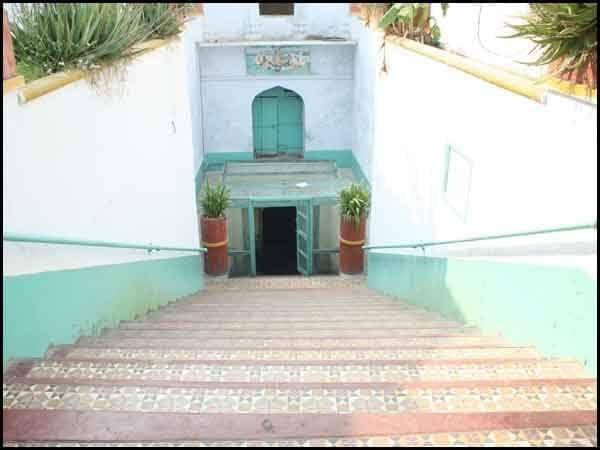
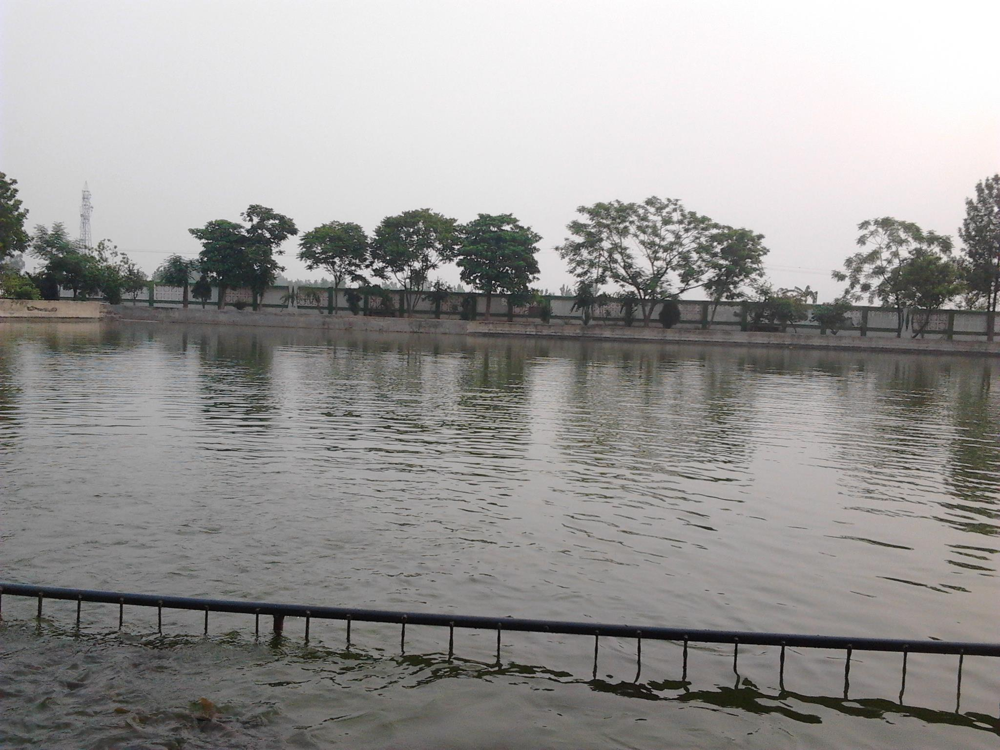
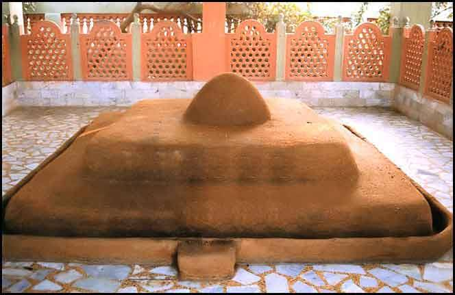
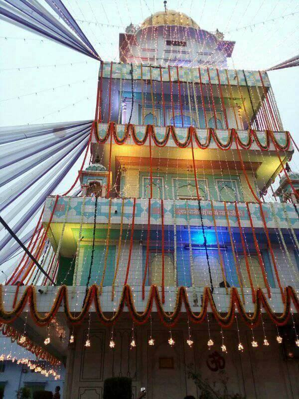
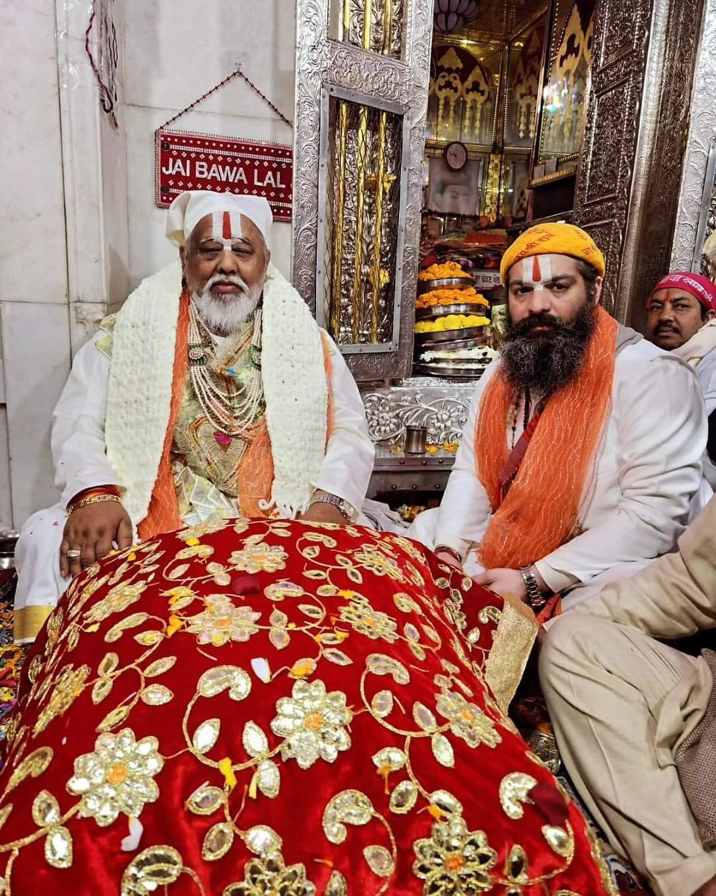
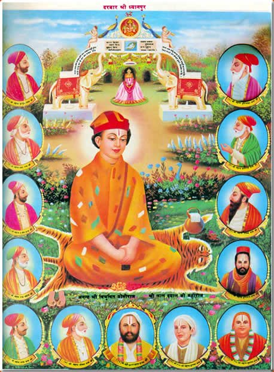
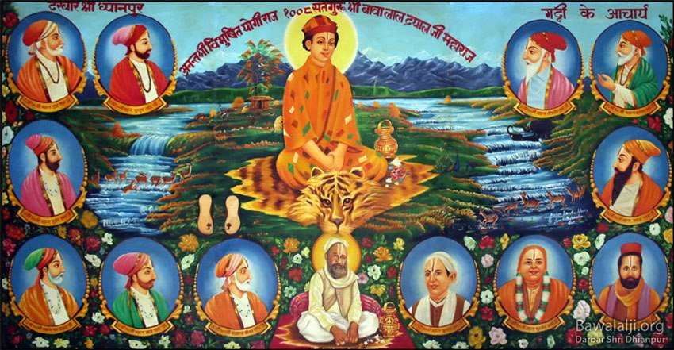
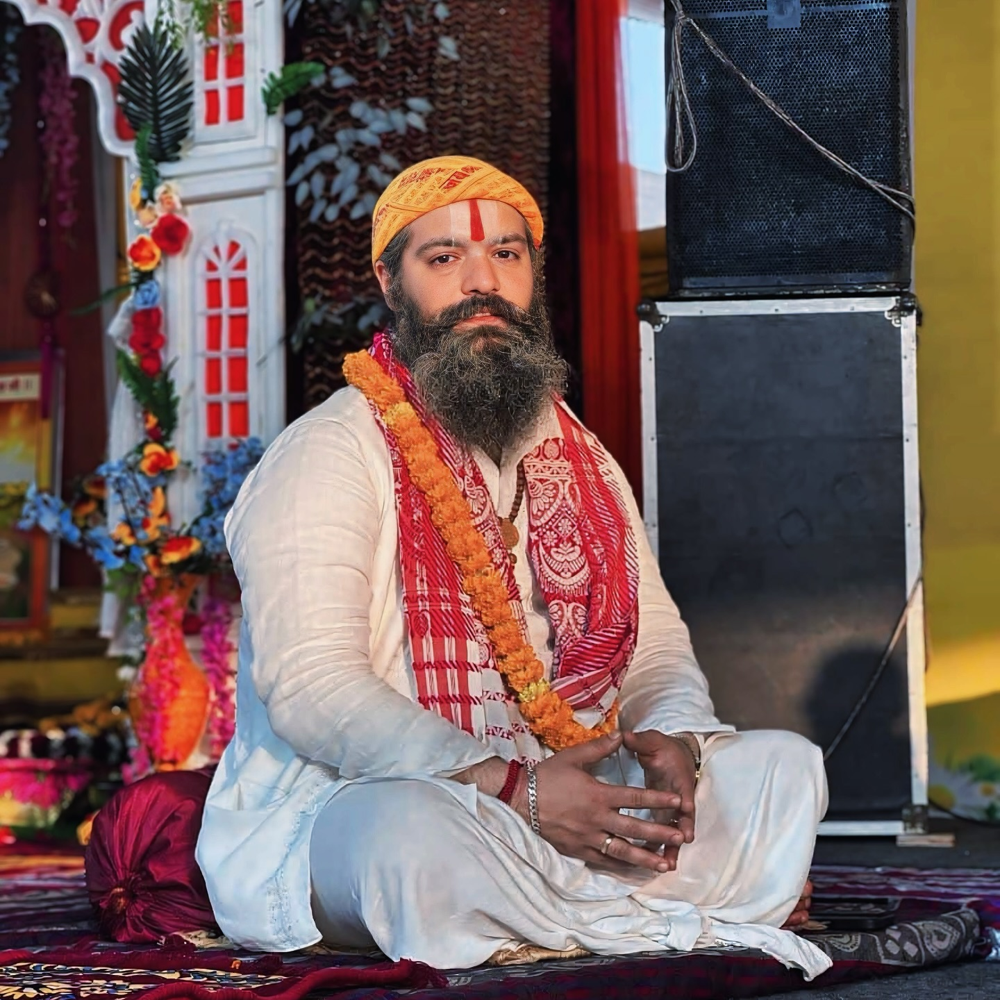
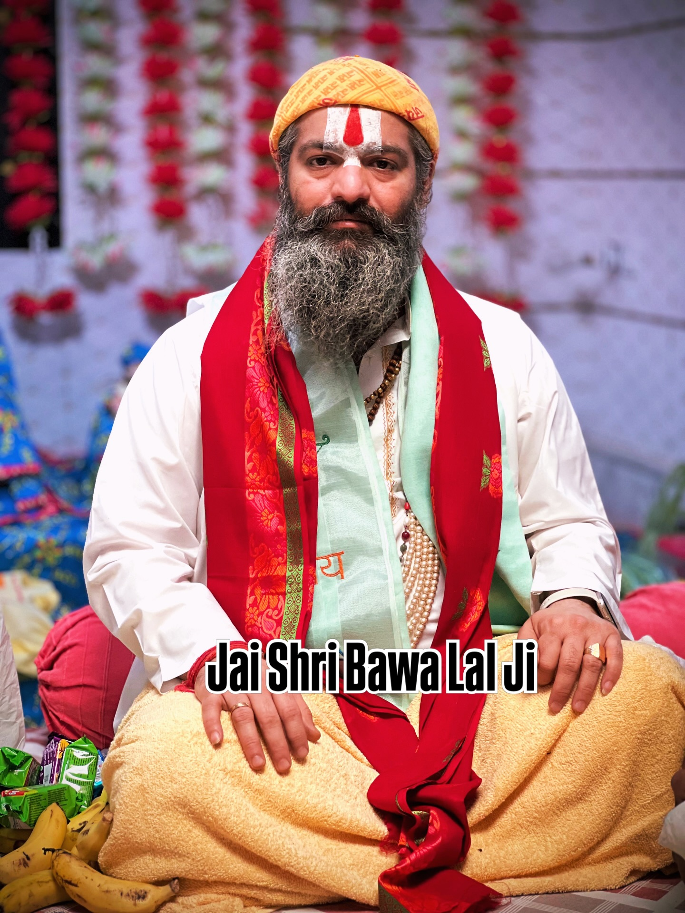
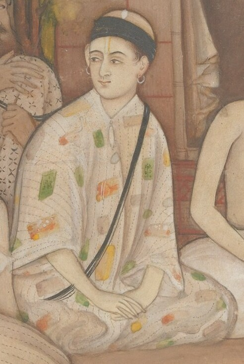

Dhianpur Templeध्यानपुर मंदिर

Dhianpur Temple Viewध्यानपुर मंदिर परिदृश्य

Sacred Templeपवित्र मंदिर

Temple Architectureमंदिर वास्तुकला

Gurdaspur Templeगुरदासपुर मंदिर

Shri Bawa Lal Ji Samadhiश्री बावा लाल जी की समाधि

Temple Baoliमंदिर बावड़ी

Temple Sarovarमंदिर सरोवर

Kachi Samadhiकच्ची समाधि

Dhianpurध्यानपुर

Shri Bawa Lal Jiश्री बावा लाल जी

Shri Bawa Lal Jiश्री बावा लाल जी

Shri Bawa Lal Jiश्री बावा लाल जी

Shri Bawa Lal Jiश्री बावा लाल जी

Shri Bawa Lal Jiश्री बावा लाल जी

Shri Bawa Lal Jiश्री बावा लाल जी
Shri Bawa Lal Jiश्री बावा लाल जी
Shri Bawa Lal Jiश्री बावा लाल जी
Shri Bawa Lal Jiश्री बावा लाल जी

Shri Bawa Lal Dayal Jiश्री बावा लाल दयाल जी
Shri Bawa Lal Ji Portraitश्री बावा लाल जी का चित्र

Shri Bawa Lal Ji Darshanश्री बावा लाल जी दर्शन

Divine Darshanदिव्य दर्शन

Holy Samadhiपवित्र समाधि

Satguru Shri Bawa Lal Dayal Jiसतगुरु श्री बावा लाल दयाल जी

Eternal Lightशाश्वत प्रकाश
.jpg)
Mahant Dwarka Das Jiमहंत द्वारका दास जी
.jpg)
Mahant Harinaam Das Jiमहंत हरिनाम दास जी
.jpg)
Mahant Narain Das Jiमहंत नारायण दास जी
 - 1.jpg)
Mahant Narain Das Ji (Portrait)महंत नारायण दास जी (चित्र)
 .jpg)
Mahant Raghav Das Jiमहंत राघव दास जी
 .jpg)
Mahant Ram Sundar Das Jiमहंत राम सुंदर दास जी